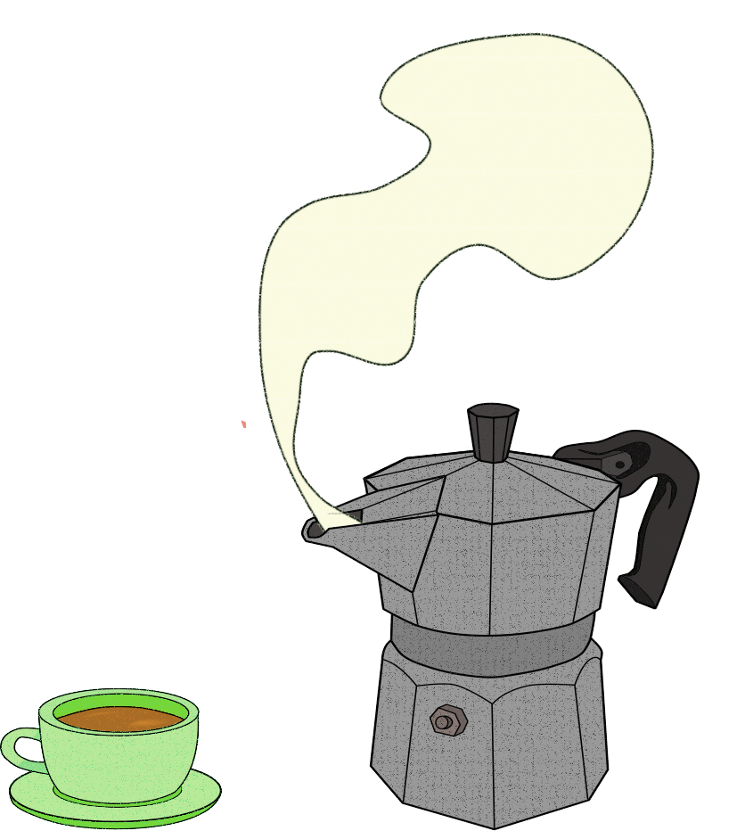

Every time you sit down to eat, you make a choice, not just about taste or health but also about the environment.
Making food is a process that consumes massive resources: land to grow crops, water to hydrate animals and process meat, fuel to transport goods across countries. It's a chain of actions that begins on farms and ends at your fork. Along the way, it pumps greenhouse gases into the air: cows digesting and farting in industrial farms, factories processing snacks, trucks rumbling toward your supermarket.
So, how much does food impact our planet? How much is the coffee you’re drinking right now, reading these lines, contributing to environmental collapse?
If you're here, perhaps you want to do something about it. After all, you live on planet Earth, and we think you care at least a little about it. But what can you do?
What’s Really On Your Plate?
Surely, having the chance to change the world by going to the supermarket and picking up the less impactful (and most delicious, we hope) food item is thrilling.
But first, you need answers, or better, you need questions to be answered about what you eat.
We asked a few key questions to help you and ourselves understand what’s really on your plate.
We started globally:
What’s the environmental impact of food globally?
How much water does the food sector use compared to others?
Which sectors emit the most greenhouse gases?
How much land is used to grow our food?
Then, we zoomed into Italy:
We believe in a world without boundaries, but cultural differences are beautiful and must be preserved. Consumption habits change from place to place.
That’s why we decided to focus on a single country, to understand what’s good and what’s bad about how we eat.
We chose Italy, it’s where we come from. In the end, our questions arose from our own plates.
What are the most commonly consumed foods in Italy?
What are their water and carbon footprints?
Looking forward:
We offer data-grounded substitutes to help reduce the environmental impact of your meals, without sacrificing taste.
We also explore whether high-impact foods come with higher prices.
More money in your pocket, less burden on the planet.
Before we dive into our meals let’s zoom out and ask:
How much does food impact our planet?
As it turns out, it’s a lot. From the water and land used to grow our crops and livestock and the gas released during production, the food sector leaves one of the biggest footprints on Earth.
Let’s see how it compares to other industries when it comes to water withdrawals, greenhouse gas emissions and land use
water
How much water does the food sector use compared to others?
Water scarcity is one of the major challenges our planet is facing and the way we produce food plays a big part. Around 70% of global water withdrawals are used for agriculture and food systems, making it by far the most water-intensive sector in the world. That water goes into every stage of the process: irrigating crops, hydrating animals, processing raw ingredients, and cleaning equipment in factories. In comparison, industrial uses and household needs account for much smaller shares.
To put it simply: food doesn’t just feed us. It drinks a lot, too.
Agriculture leads global water withdrawal
Data Source: FAO, Our World in Data, and other aggregated datasets used for educational purposes.
land
How much land is used to produce food?
Almost half the planet is feeding us, quite literally.
Nearly 40% of the world’s habitable land is used for agriculture. That’s a huge chunk of Earth’s surface devoted to growing crops and raising animals. Unlike factories or homes, food production needs space, a lot of it. Fields for wheat, orchards for fruit, pastures for livestock... all that land adds up.
But this land hunger comes at a cost. Expanding farmland often means cutting down forests, destroying habitats, and pushing wildlife out. It’s one of the biggest drivers of biodiversity loss today.
In this chart, you can see how global land is divided: from agricultural use to forests, cities, and other land types. Spoiler: food takes the biggest bite.
Agriculture: The World’s Largest Landowner
Data Source: FAO, Our World in Data, and other aggregated datasets used for educational purposes.
co₂
How much CO₂ is released by the food sector?
While energy and transportation often grab the headlines in climate talks, agriculture and food systems are major contributors to greenhouse gas emissions, especially through livestock farming and crop production/strong>. Globally, the food sector is responsible for over 20% of total emissions, making it the second largest emitter after energy production. From methane released by cows to the fuel used for farming equipment and food transport, our meals leave a bigger carbon trail than most people realize.
Your Meal Is a Major Polluter, Second Only to Power Plants
~13.75 million kilotons
of CO₂ equivalent emissions
Data Source: FAO, Our World in Data, and other aggregated datasets used for educational purposes.
As we can see in the chart, the process with the highest emissions is livestock production . And it’s no surprise: as you’ll see later, animal products have some of the highest carbon footprints . Interestingly, food transportation doesn’t contribute nearly as much as people often think. So maybe it’s time to swap the slogan "eat local" with a new one: "eat plants."
What about Italy
After looking at the global picture, it’s time to bring the focus home. We decided to zoom in on Italy, not just because it’s where we live (and eat), but because understanding local habits is the first step toward real change.
What do Italians actually eat? Which foods weigh heaviest on the environment? And can our beloved espresso or extra virgin olive oil be part of a more sustainable future?
Let’s find out what’s really cooking in Italian kitchens.

popularity
What are the most commonly consumed foods in Italy?
The love of Italians for coffee is not only a stereotype: coffee together with cow’s milk is among the most consumed foods in Italy.
But that’s not the end of it. If we look at the chart, we can immediately recognize the heart of Mediterranean cuisine: vegetables, a good dose of olive oil, and of course pasta.
A diet that reflects deep-rooted habits and authentic tastes, but also hides some surprises: not all these food items are as light on the environment as they are in our dishes. Some, such as olive oil, are among the most "challenging" in terms of environmental impact.
Most Popular Food Items in Italy
Data Source: FAO, Our World in Data, and other aggregated datasets used for educational purposes.
co₂ and water
What is the carbon footprint of those foods? And the water footprint?
Among the 12 most consumed foods in Italy, vegetables are the most sustainable: they consume little water and produce less CO₂. On the contrary, meat, particularly beef, has a much higher environmental impact, especially in terms of emissions and resources needed for production.
But what about the milk? Even if it comes from the same animal, it has a much lower impact than beef: probably because a cow can produce milk for years, while meat requires slaughter and more resources
Oil is an unexpected champion of water consumption, together with coffee and beef.
CO₂ and Dehydration for Dinner? Beef and Coffe Say Yes
Data Source: FAO, Our World in Data, and other aggregated datasets used for educational purposes.
popular foods and their alternatives
Are there any alternatives, to some of those popular foods, with a lower environmental cost?
As we have seen, some of the foods most loved by Italians have an important ecological impact. But the good news is that there are more sustainable alternatives that allow us to enjoy similar dishes, but with a much lighter environmental footprint.
In general, choosing plant-based foods is almost always a winning choice to reduce CO emissions and water consumption. But beware: it’s not always all black and white. Some foods that emit little CO can consume a lot of water, and vice versa. An example? Soy milk is a good choice in terms of emissions, but higher in water consumption than cow’s milk.
The key is to be curious and aware: small changes in our eating habits can have a great positive impact on the planet without sacrificing taste!
Footprint Comparison
Data Source: FAO, Our World in Data, and other aggregated datasets used for educational purposes.
price and environmental cost
Is there a correlation between environmental cost and the monetary value of food products?
An interesting and somewhat surprising trend seems to emerge from the data collected: there could be a correlation between the cost of food and its environmental impact, especially with regard to CO₂ emissions.
Simply put: the more we spend on food, the more likely it is to pollute. Not always, of course, but in general the most expensive products tend to have a longer supply chain, an animal origin, or require more resources to be produced, all things that increase their carbon footprint.
Less Carbon, More Cash: The Food Price Connection You Should Know
Data Source: FAO, Our World in Data, and other aggregated datasets used for educational purposes.
The True Cost of Your Meal
When we sit down to eat, we rarely think beyond taste, price, or convenience. But every ingredient carries an invisible footprint — one that affects our planet through carbon emissions, water consumption, and land use.
From our data, one thing is clear: plant-based foods tend to have a lighter environmental impact, while animal-based and processed products usually cost the Earth more.
It’s not about guilt, but about awareness. Understanding the true cost of a meal empowers you to make choices that are better for the planet — and often better for your health and wallet too.
So next time you’re filling your plate, ask yourself: How can my food choices help create a healthier planet and a happier me?
What's on your Plate?
Some foods are heavier on the Earth, want to see how yours compares?
Select your ingredients and see how much each of them impacts the environment or look through the complete menu.